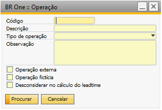

Operação
Para acessar o cadastro de Operação é necessário ir no menu:
Administração-> Definição -> Produtos -> Operação
{kind=link}
A tela é aberta no modo de Procurar, para adicionar deve ativar o botão Adicionar ou Ctrl+A, a tela ficará no modo de adição:

Para adição dos dados é necessário informar o codigo, descrição e tipo de operação.

O Tipo pode ser definido como:
Setup - Utilizado para tempo de preparo e ajustes do recurso.
Produção - Utilizado para tempo de produção do recurso.
Operação externa
A flag Operação externa indica que a produção não será produzida na empresa, ou seja, utilizado no processo de beneficiamento de compra.

Operação fictícia.
A flag Operação fictícia é apenas utilizado em roteiros de itens fictícios, para itens que não são fictícios essas operações não serão exibidas, e dentro da Ordem de produção elas também não serão listadas.

Desconsiderar no cálculo do leadtime.
A flag Desconsiderar no cálculo do leadtime, é utilízada para que no calculo de início e fim da ordem de produção, essa operação será desconsiderada no tempo de conclusão da produção.

O ideal é considerar todos os fatores relevantes que afetam o tempo de conclusão e adaptar o cálculo do lead time de acordo com as necessidades e objetivos específicos do processo em questão.